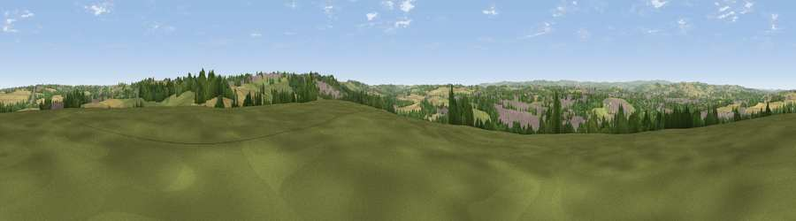

Viewpoint near Shuttlewood
#19763 in England · top 22% of its area beats it · near ShuttlewoodThe view, rendered

A 360° render of this exact spot computed from the terrain model, tree cover and land cover — summer colours, afternoon light, calibrated against photographs of famous viewpoints. Real trees, hedges and buildings will differ in detail.
The panorama
Grey silhouette: terrain skyline in each direction (720 bearings, Earth curvature and refraction included). Dashed green: skyline with trees (+15 m) and buildings (+8 m) as obstacles. Blue strip: how far the ground is visible on each bearing.
Where the view opens
Wedge length = distance to the farthest visible ground on that bearing (vegetation-aware). Rings at 10, 25 and 50 km.
What fills the view
38% grassland · 22% woodland · 21% built-up · 17% cropland · 1% bare ground
Angular shares of the visible panorama (visual magnitude), not map area. Landscape diversity 0.61 (0–1 Shannon).
Key numbers
More beautiful places nearby
The staircase of upgrades: each row has a higher view potential than everything closer. Driving times are estimates from straight-line distance, calibrated against real road routing — check an actual route before setting out.
| Place | Direction | Drive | Score |
|---|---|---|---|
| Viewpoint near Bolsover | SE · 2 km | ~5 min | 60.4 |
| Viewpoint near Marsh Lane | NW · 9 km | ~17 min | 61.1 |
| Viewpoint near Ridgeway | NNW · 11 km | ~21 min | 67.6 |
| Viewpoint near Alton | SW · 13 km | ~24 min | 67.7 |
| Viewpoint near Brackenfield | SW · 17 km | ~29 min | 68.3 |
| Burstheart Hill [Thoresby Colliery] | ESE · 18 km | ~31 min | 69.3 |
| Viewpoint near Holmesfield | WNW · 18 km | ~31 min | 69.4 |
| Crich Stand | SW · 21 km | ~35 min | 73.0 |
53.24867, -1.31469 · source: screening · position refined by local search. Computed location — check access rights before visiting.